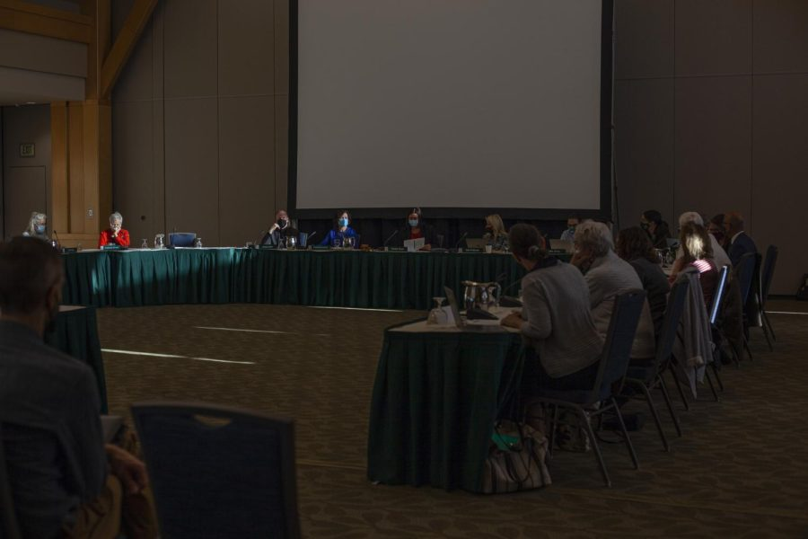

Board terminates two minors, one major, one masters and three doctorate programs
The Educational Policy and Institutional Resources Committee meets inside the Silver Maple Ballroom Oct 29. THE CYNIC/Mac Mansfield-Parisi
The board of trustees voted to terminate several majors, minors, graduate degrees and doctorates today in their meeting on Educational Policy & Institutional Resources.
The Educational Policy & Institutional Resources Committee unanimously voted to terminate molecular physiology masters and doctorate degrees, molecular biology and pharmacology doctorates, the Italian minor and the Italian studies major.
The committee terminated speech and debate and Vermont studies minors with one objecting vote.
Carolyn Dwyer, chair of the Educational Policy & Institutional Resources Committee, introduced resolutions for terminations without a summary because the meeting ran long.
Legislative Trustee John Bartholomew said some of these programs are necessary.
“For these suggestions based on lack of enrollment[…], a couple of [programs] seem pretty important,” Bartholomew said. “Like microbiology, molecular genetics and pharmacology.”
However, Patricia Prelock, vice provost and senior vice president, said the new CME program in the College of Medicine now includes molecular physiology and molecular biology, rendering those masters and doctorates redundant.
These resolutions came through six points of contact before arriving at the board of trustees for a decision, Prelock said. A total of 11 minors were requested for termination and the rest are coming forward, she said.